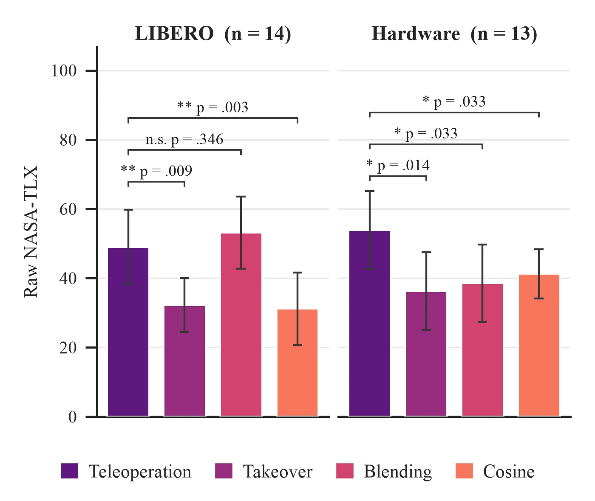
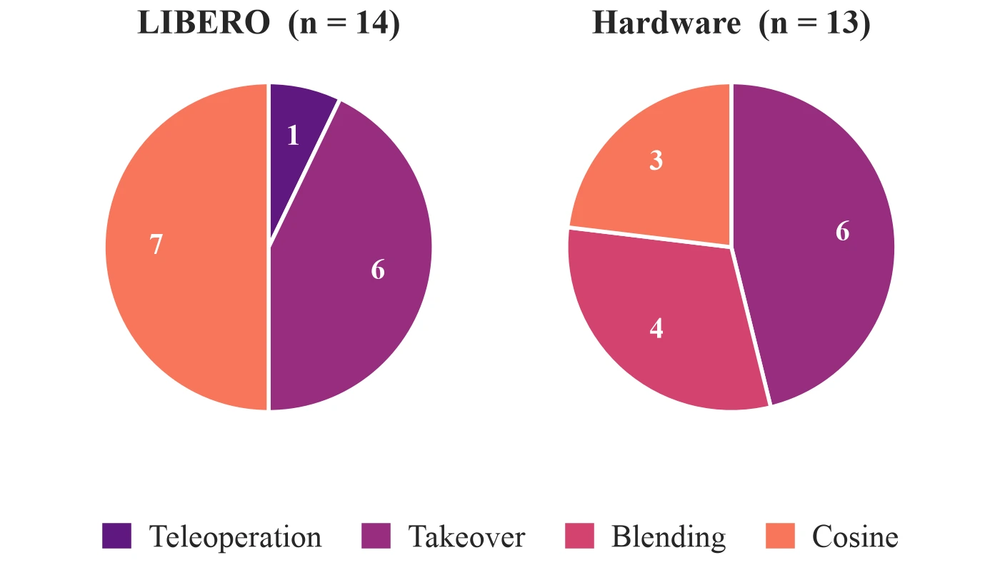

Brittleness under perturbation
A pretrained policy can execute a task reliably and fail on a version of it that differs only in where an object sits. Moving a single target object, with the instruction and the rest of the scene unchanged, is enough: across displacements of 15 cm or more in LIBERO, π0.5 averages 22.9% success.
The degradation is graded rather than abrupt. Across eight perturbed configurations, success declines with displacement (Pearson r = −0.800, p = 0.005), and the policy continues to reach confidently for the location the object occupied in the demonstrations. The low-level manipulation survives the perturbation; what degrades is the grounding of the instruction in the scene in front of it. Under the same displacements, Blending and Cosine arbitration hold success at 87.9% and 90.0%.
LIBERO-PRO isolates this more directly, since it perturbs the task specification rather than the geometry, exchanging which of two objects belongs at which target or naming a different object in the instruction. Autonomous π0.5 averages 15.0% across ten such tasks. Three real-world tasks with a DROID-finetuned checkpoint show the same pattern, at 50% on pick-and-place, 25% on closing a drawer, and 5% on opening a cabinet.
Returning the robot to manual control resolves the failure. A practiced operator on a gamepad completes very nearly every episode. It also discards the policy and places the full manipulation sequence on the operator, which is slow in simulation, where depth must be judged from camera views, and effortful in both settings. The question we were interested in is whether a person needs to supply that much: whether the policy can continue to do the manipulation while the operator contributes only the part it gets wrong.
Arbitration at the action level
SAPS leaves the policy untouched. At each of the 20 control steps per second the VLA proposes an action, and the operator may or may not be supplying input. The executed action is a convex combination of the two:
The first six dimensions are translational and rotational end-effector motion. The gripper is handled separately as \(a^{(7)} = \max(a^{(7)}_{\textit{VLA}}, a^{(7)}_{\textit{expert}})\), so that either party can initiate a grasp without the two opposing each other. When the operator is idle, meaning the expert action norm falls below \(\epsilon = 0.001\), \(\alpha = 1\) and the policy runs on its own.
The substantive question is how \(\alpha\) is chosen. We compared three arbitrators, selected to span a range from treating the operator as a switch to treating the operator as one vote among two:
- Takeover
- Hard switching. Any detected operator input sets \(\alpha = 0\) and gives the operator the arm outright; releasing the stick returns control to the policy.
- Blending
- A fixed 50/50 mix whenever the operator is active. The simplest continuous arbitrator, and the one we expected operators to prefer.
- Cosine
- The two actions determine the weight. We measure the cosine similarity between the operator's commanded direction and the policy's, pass it through a logistic (\(\alpha = \sigma(6\cos\theta)\)), and use the result as the weight. Where the two agree the arbitrator defers to the policy; where they diverge, authority shifts toward the operator.
Cosine arbitration is worth examining, because the behaviour it produces requires no additional information. It does not need to know the task, the operator's intent, or the policy's confidence. Disagreement between the two action vectors serves as the signal: if the operator is pushing against the policy, that opposition is itself evidence that the policy is wrong, and the weight adjusts accordingly. The formulation also leaves room for substitution, since any other confidence measure could replace \(\cos\theta\).
The alternatives require more. ITPS injects a human-specified position-target gradient into every denoising step of the diffusion sampler. DynaGuide trains a separate dynamics model together with a classifier to bias sampling toward desired futures. SAPS sits entirely outside the policy and reads only its output, which is also why it runs unchanged over both a π0.5 VLA and a diffusion policy.
Benchmark results
LIBERO-PRO: recovery under task perturbation
On the ten out-of-distribution LIBERO-PRO tasks, all three arbitrators recover close to what teleoperation achieves. Against 15.0% for autonomous π0.5, Blending reaches 92.6%, Takeover 93.2% and Cosine 97.4%, with full teleoperation at 98.8%. Each arbitrator improves on the policy alone at p = 9.77×10−4 (one-sided Wilcoxon signed-rank).
The quantity of more interest is how much operator input this required. Blending and Takeover drew input on 10.8% and 11.7% of control timesteps, Cosine on 30.0%, against 100% for teleoperation by construction. Intervention rate did not correlate with task order (p > 0.09), which is consistent with targeted correction rather than an operator progressively assuming control.
Recovery is also not slow. Blending, Cosine and Takeover complete in 11.1 s, 13.0 s and 13.2 s on average, against 30.7 s for autonomous π0.5, which spends time in unsuccessful recovery attempts, and 46.0 s for teleoperation, where the operator flies the entire trajectory through a camera feed. All three are faster than both baselines at p < 0.001.
CALVIN: comparison with learned steering methods
The comparison we find most informative is on CALVIN, steering a baseline diffusion policy across 11 subtasks. Cosine arbitration averages 93% success, against 80% for DynaGuide, 66% for ITPS and 45% for the unguided policy. It is also the only method that remains high throughout, reaching 100% on all eight articulated subtasks and 70–90% on the three harder block-lift subtasks.
One reading of that result is simply that methods with a human in the loop outperform those without. The intervention rates do not support it. ITPS places a human in the loop at a comparable rate, 75.5% of timesteps against Cosine's 79.8%, a difference of 4.3 percentage points. With comparable operator effort and an identical base policy, 27 points of success separate the two methods, which locates the difference in the arbitration mechanism rather than in the presence of an operator.
End-effector path length is consistent with this. The unguided policy travels 2–3× farther per episode than Cosine does on the same subtask, an undirected exploratory motion that coarse directional input largely suppresses.
Transfer to a physical robot
On a physical Franka with a DROID-finetuned π0.5, Cosine averages 98.3% across pick-and-place, closing a drawer and opening a cabinet, and Blending 93.3%, against the policy's own 50%, 25% and 5%. Intervention remains partial, at roughly 55–69% of timesteps for Cosine and 49–67% for Blending, each a significant reduction against teleoperation's 100% (p < 10−15).
Both arbitrators also beat autonomous π0.5 on completion time across all three tasks (p ≤ 0.0212), and match teleoperation, which is quick on hardware because depth is directly visible. The gain here is that comparable speed is reached without the operator driving every timestep.
A user study with fourteen operators
The results above were produced by two experienced operators, which establishes what the method can do and says nothing about how it is experienced. We therefore ran a separate study: 14 able-bodied operators (mean age 24.0, SD 5.8), each completing a LIBERO block and a hardware block under all four conditions, then rating workload on the raw NASA-TLX and force-ranking the methods. One hardware block was discarded following a joint-torque sensor fault, leaving n = 14 in simulation and n = 13 on hardware.
Across the study, SAPS reached 8.1× the success rate of fully autonomous execution and 1.8× that of full teleoperation, with active human control on 45% of timesteps, 16% faster completion than teleoperation, and workload reduced by 20.8% in simulation and 28.2% on hardware.

Arbitration method affected workload on both benchmarks (Friedman; LIBERO p < .001, hardware p = .007). In simulation, teleoperation (M = 49.0, SD = 18.6) was more demanding than Cosine (M = 31.1) and Takeover (M = 32.2), but did not differ from Blending, which at M = 53.1 was numerically higher than driving the robot directly. On hardware all three arbitrators fell below teleoperation (M = 53.8), at 36.2 for Takeover, 38.5 for Blending and 41.2 for Cosine.
A reversal between benchmarks
Preference, measured by the end-of-block forced ranking, did not agree across the two benchmarks.

In simulation no operator ranked Blending first, and 10 of 14 placed it below raw teleoperation. Cosine took 7 first-place votes and Takeover 6. On the physical robot the same arbitrator took 31% of first-place votes, and teleoperation was the method that received none and finished with the worst median rank. The three arbitrators became statistically indistinguishable from one another on hardware (all pairwise pHolm ≥ .65), with the omnibus effect carried by teleoperation sitting below Takeover.
Our interpretation is that a fixed 50/50 mix is costly precisely when the operator cannot see well. In simulation the operator is already resolving depth ambiguity through a camera feed, and halving their authority means each correction must be made twice as large while still arriving diluted by a policy that is confidently heading elsewhere. In front of the physical arm, with direct depth perception and a policy whose low-level behaviour is genuinely useful, the same 50/50 mix reads as smoothing rather than resistance. The workload figures are consistent with this, with Blending falling from 53.1 in simulation to 38.5 on hardware.
We take from this that the arbitrator is not a parameter to be fixed once. Takeover was the only method operators favoured in both settings, and Cosine was strongest on task metrics almost everywhere, but which one an operator prefers depends on how well they can observe what the robot is doing.
A single expert user
Separately from the 14-operator pool, one expert robot-arm user with quadriplegia, who uses an adaptive controller daily, completed the study. They are reported as a case study rather than pooled, on a population criterion fixed in advance rather than on anything about their results. Their task metrics improved under SAPS, with higher success rates and shorter completion times. Their rankings put teleoperation first and Blending last on both benchmarks, which is consistent with an interface already matched to its user leaving less for arbitration to contribute. The appendix reports their full record.
Limitations
SAPS requires a human at test time, so performance depends on operator timing, skill and the interface; every result here used a gamepad. It also blends against the policy's action and nothing else, with no model of task progress, operator intent, policy uncertainty, contact or safety, so a policy that is confidently wrong is caught only once the operator pushes back. The appendix reports the full evaluation scope.
Read further
- Method: full arbitration definitions and the policy setup
- LIBERO and LIBERO-PRO: perturbation design, per-task success, completion time and intervention tables
- CALVIN: comparison against DynaGuide and ITPS, with qualitative rollouts
- Real robot: hardware tasks, success and intervention